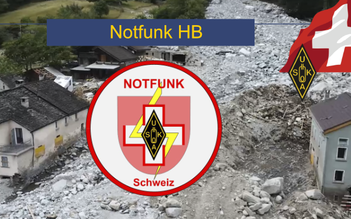

Notfunk heute: Verbindungen vorbereiten, bevor sie fehlen
EmComm verbindet Funktechnik, unabhängige Stromversorgung und Teamarbeit. Ein Einstieg mit Beispielen aus Zug und Uri-Schwyz.

Bildquelle: uska.ch · Notfunk HB
Warum mich dieses Thema beschäftigt
Eine Funkstation ist ein spannender Experimentierplatz. Noch interessanter wird sie, wenn daraus eine verlässliche Verbindung für andere entsteht. Beim Notfunk – international oft EmComm, Emergency Communications, genannt – geht es um vorbereitete Kommunikation bei Ausfällen oder ausserordentlichen Lagen. Ein Funkgerät allein ist dafür erst der Anfang: Energie, Gegenstation, verständliche Meldungen und ein geübter Ablauf müssen zusammenpassen.
Was daran heute so spannend ist
Moderne Notfunkpraxis verbindet klassisches Sprechen mit Datenübertragung. Ein kurzer Lagebericht lässt sich mündlich übermitteln; eine längere Liste soll möglichst ohne Abschreibfehler ankommen. Funkamateure können beide Wege aufbauen und ihren Einsatz vorher erproben. Dazu kommen portable Antennen, Akkus, sparsame Rechner und lokal betriebene Netze. Die technische Aufgabe lautet: Welche Information muss zwischen welchen Orten auch dann noch ankommen, wenn eine gewohnte Infrastruktur fehlt?
Absender, Zeit, Inhalt→Funkverbindung
vereinbarter Weg→Bestätigung
Empfang und Übergabe
Regionale Beispiele statt abstrakter Versprechen
Die USKA-Sektion Zug HB9ZG ↗ beschreibt ihre Zusammenarbeit mit der kantonalen Notorganisation seit 2006. Im Mittelpunkt stehen ergänzende Verbindungen zwischen Führungsstäben. Der Bericht zeigt den Weg von Sprechfunk zu digitalen Verfahren: Richtfunk sowie VARA FM auf VHF/UHF ermöglichen den Meldungsaustausch. ARQ-Verfahren fordern fehlerhaft empfangene Datenblöcke erneut an. Das ist besonders hilfreich, wenn Zahlen und Texte exakt ankommen sollen.
HB9CF, USKA-Sektion Uri-Schwyz ↗, stellt unter anderem Sprach- und Datenverbindungen, Relais sowie den Betrieb ohne öffentliche Strom- und Telekommunikationsnetze als Aufgaben vor. Solche Fähigkeiten entstehen durch vorbereitete Standorte, passende Ausrüstung und Menschen, die deren Bedienung beherrschen. Die USKA bündelt EmComm-Themen ↗ und behandelt auch die Zusammenarbeit mit Behörden.
Drei Ebenen, die gemeinsam funktionieren müssen
- Technik: Antenne, Frequenz, Reichweite und Stromversorgung. Ein Relais hilft nur, solange es selbst versorgt und erreichbar ist.
- Betrieb: Wer hört wann auf welchem Kanal? Wie wird bei Ausfall gewechselt? Welche Gegenstation kann die Meldung tatsächlich weitergeben?
- Organisation: Wer erteilt Aufträge, setzt Prioritäten und bestätigt die Übergabe? Eine erfolgreiche Funkverbindung bedeutet noch nicht, dass die zuständige Stelle die Information erhalten hat.
Eine sinnvolle Übung für Einsteiger
- Mit einer lokalen Gruppe eine ausdrücklich als Übung gekennzeichnete Verbindung vereinbaren. Zuerst vorhandene Abläufe kennenlernen.
- Eine kurze fiktive Meldung vorbereiten: laufende Nummer, Uhrzeit mit Zeitzone, Absender, Empfänger, Inhalt und gewünschte Rückmeldung. Keine echten persönlichen Notfalldaten verwenden.
- Empfang und Übernahme getrennt bestätigen. Schwierige Zahlen oder Namen wiederholen und buchstabieren.
- Für eine vereinbarte Zeit aus dem Akku arbeiten. Empfangs- und Sendestrom messen; Ladezustand und Spannung unter Last notieren.
- Danach auswerten: Was ging verloren? Welche Steckverbindung fehlte? War die schriftliche Anleitung auch für jemand anderen verständlich?
Im Funklabor ↗ helfen Akku- und Spannungsabfall-Rechner bei der Vorbereitung. Sie ersetzen den Versuch mit der eigenen Station nicht: Ein Akku kann rechnerisch noch Kapazität besitzen, obwohl das Funkgerät wegen zu niedriger Spannung bereits abschaltet.
Notfunk ist Zusammenarbeit
Amateurfunk ergänzt professionelle Strukturen. Für reale Hilfe gelten die offiziellen Alarmierungswege und die Absprachen der zuständigen Organisationen. Selbstständig an einem Einsatzort aufzutauchen oder einen angeblichen Notfunkkanal zu belegen schafft keine verlässliche Unterstützung. Der beste Einstieg ist ein Kontakt zu einer regionalen Gruppe und eine gemeinsame Übung – lange bevor eine Verbindung dringend benötigt wird.